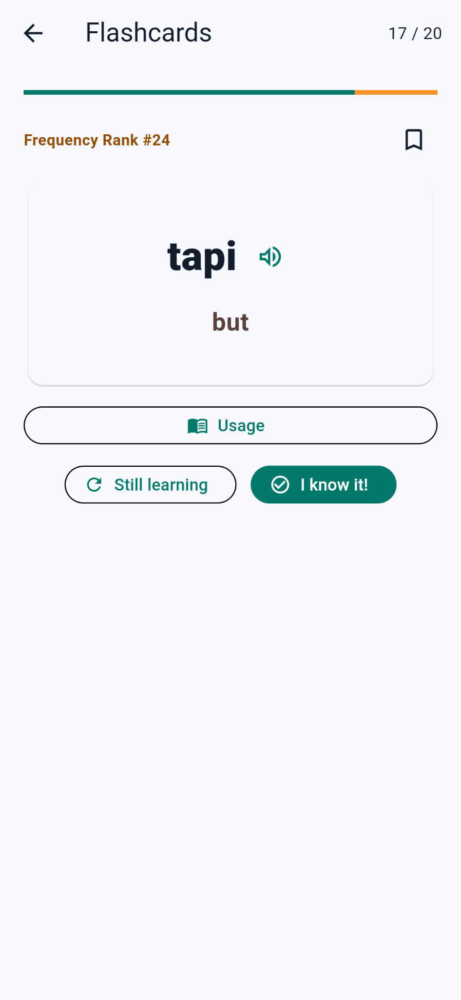
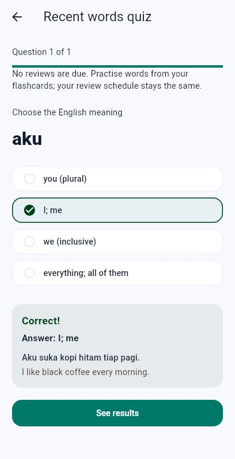
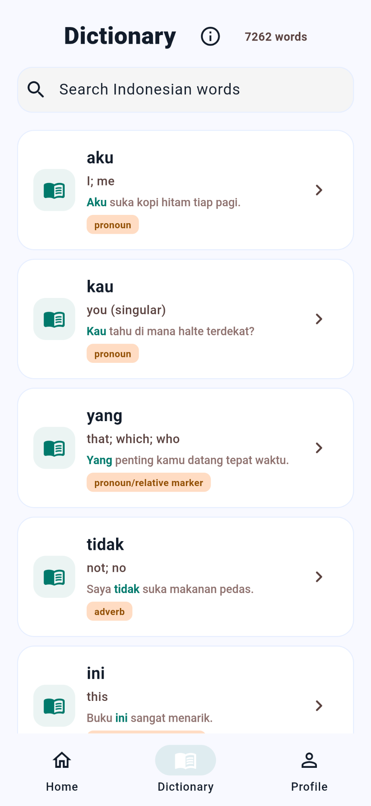
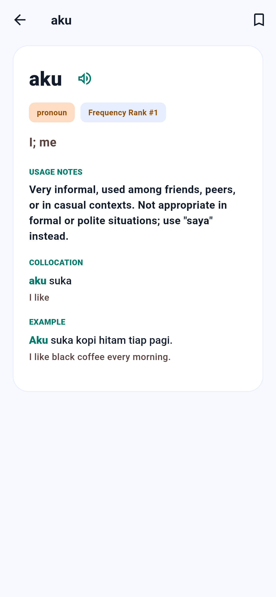

Daily goals & progress
Set a daily goal and see your learning activity and streak in the app.
Indonesian vocabulary learning
IndoFreq is a vocabulary app with flashcards, quizzes and spaced repetition. New words follow the frequency order in its vocabulary dataset, starting with more common words.
Android APK or browser. Guest mode available.

IndoFreq takes its name from the way its vocabulary is organised: by how frequently words are used, according to the supplied dataset.
A lower frequency rank means a word is more common within that data. Rank guides the order of new words; spaced repetition determines when studied words come back for review.
Frequency rank is an order, not a difficulty score.
It does not tell you how many times
a word occurs, or how easy you will find it. Usage varies by context.

Use flashcards for study, then a quiz for recall. Look up a word or keep it in your own list.
Read the Indonesian word, English meaning and usage examples. Choose “I know it” or “Still learning” to continue.
Practise words due for review. If none are due, the quiz can use words already shown in flashcards.
Search Indonesian words and English meanings. Find words you have saved or marked known.
Set a daily goal and see your learning activity and streak in the app.
Vocabulary and progress are stored locally. Open the PWA online first and let its offline files finish loading. Sign-in and summary uploads need a connection.
Keep a JSON backup of your learning data and import it when moving to another installation.
Search the dictionary, then open a word for its meaning, pronunciation and examples.


Android installation uses an APK, rather than Google Play. Release downloads will be hosted on GitHub.
Download APKA public APK download link has not been added yet. You can use the web app instead.
Download the release file, open it on Android and follow the installation prompts. Your phone may ask you to allow installation from the browser or file manager you used.
Use IndoFreq without downloading an APK. You can also add it to your home screen.
Open web appThe web app is available now.
Open IndoFreq, then choose “Install app” or “Add to Home Screen” in your browser. The option and wording depend on your device and browser.
Learn as a guest, or use an account through Firebase Authentication. Your optional profile name is stored locally.
For signed-in users, Firestore stores an aggregate progress summary. It is not a full backup of saved words and review history. Use export and import for that.
Read the privacy policy ↗The people behind IndoFreq
IndoFreq is developed as part of an academic research project at Universitas Trunojoyo Madura, Indonesia.